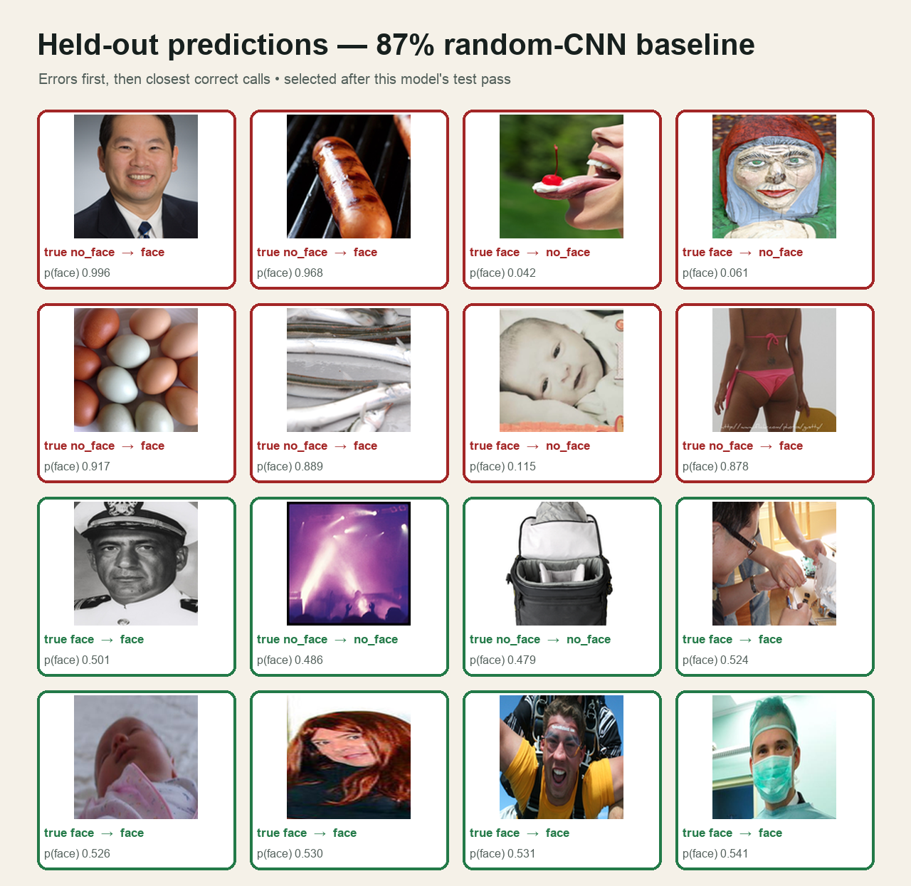
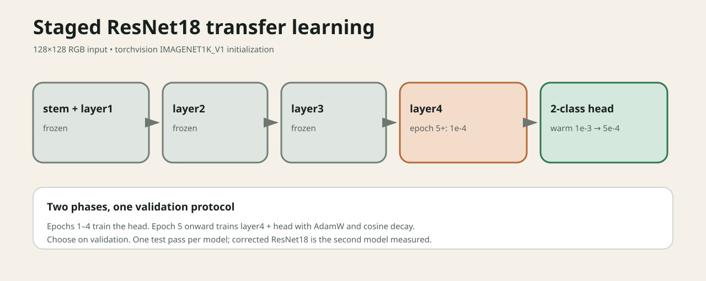
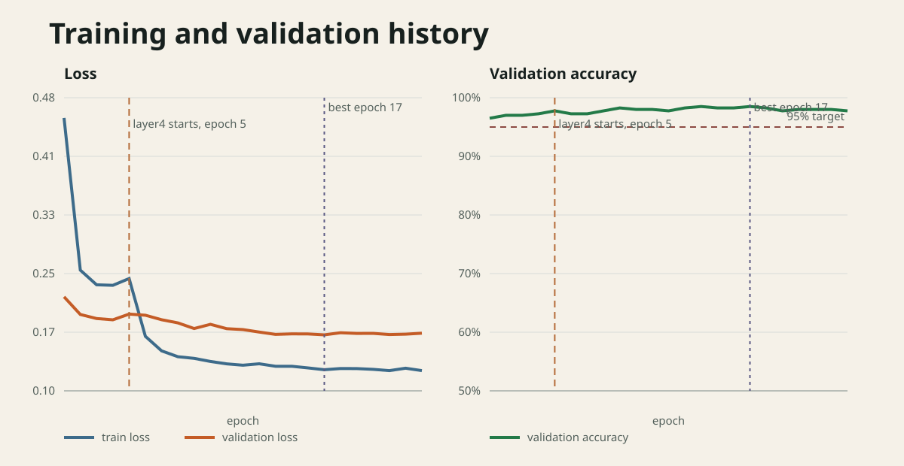
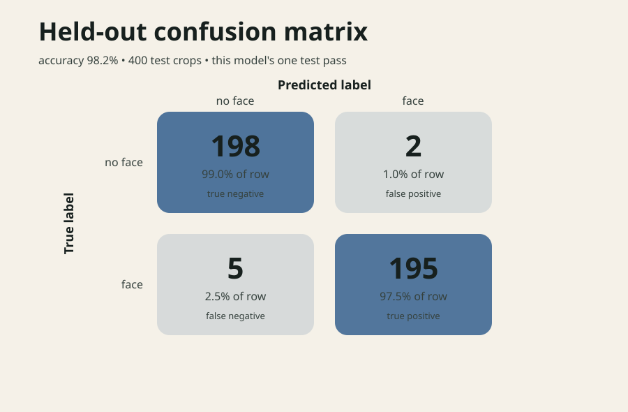

2026-09-04 · post #3
Face or Not
There was a time when getting a computer to find faces reliably was a major achievement in computer vision.
In 2001, Paul Viola and Michael Jones described a face detector that ran at 15 frames per second. Finding faces fast enough to work in real time was a research result.
For this experiment, we took a smaller version of that problem: give a model a cropped image and ask whether it contains a face. It’s a useful task for comparing a CNN trained from scratch with a model that has already learned from a much larger collection of photographs.
We ran both on Compute. The first reached 87% test accuracy; the second reached 98.25%. The two successful GPU runs cost $0.25 altogether. Along the way, we also found a bug in how Compute saved the trained model.
A face, or something else?
The input is a 128×128 RGB crop. The output is one of two labels: face or no_face, following Open Images’ Human face annotation. The crop is already prepared; locating faces inside a larger photograph would require another step. This model does not identify anyone.
Start with 4,000 examples
We built theoriclabs/face-or-not from the official Open Images validation set. Half the examples are crops around annotated faces, with some surrounding context. The other half are center crops from photographs where a human reviewer marked faces as absent.
We resized every crop to 128×128 and made our own training, validation, and test splits:
| Split | No face | Face | Total |
|---|---|---|---|
| Train | 1,600 | 1,600 | 3,200 |
| Validation | 200 | 200 | 400 |
| Test | 200 | 200 | 400 |
No source image ID appears in more than one split. We train on 3,200 crops, choose a checkpoint using the 400 validation crops, then evaluate that checkpoint once on the 400 test crops.
A manual check found a doll and a theatrical mask labeled Human face. That matters: the score measures agreement with the dataset’s annotations, including their mistakes. The crop method also differs by label, so the model may benefit from patterns introduced during preparation. This benchmark does not establish how well it would handle wide scenes or tiny faces.
The dataset card contains the exact crop rules and licensing details. Open Images lists the selected photographs under CC BY 2.0 and its annotations under CC BY 4.0; each row retains its source and attribution. The training script pins a dataset revision so subsequent runs use the same examples.
First, train a small CNN
We started with a randomly initialized CNN with 315,426 parameters. With no pretrained weights, it had to learn its visual features from our 3,200 training crops.
The checkpoint from epoch 23 reached 90.0% validation accuracy. On the test set, it got 348 of 400 crops right: 87.0%. That was below our 95% target.
The training and validation losses stayed close, and validation accuracy was still improving. Those curves left room for another experiment. We chose to try a pretrained ResNet18. We already knew the baseline’s overall test score, but made the choice without inspecting individual test images or predictions.

Give the next model a head start
A pretrained model brings features learned from images outside our small training set. We used torchvision’s ResNet18 IMAGENET1K_V1 weights and replaced the final classifier with a two-class head. This is a standard transfer learning setup.
For the first four epochs, we trained only the new head. From epoch five onward, we also trained layer4, the network’s last major block. Earlier layers and their batch-normalization state stayed frozen. The warmup gives the new head a chance to learn before we start adapting the pretrained features.

layer4 with AdamW and cosine learning-rate decay.We applied light crop and color augmentation to the training images. Validation accuracy selected the checkpoint, with validation loss breaking ties. Training could run for up to 30 epochs, with early stopping after six epochs without an improvement.
The run completed 23 epochs. Epoch 17 had the best validation result: 98.5%.
Seven mistakes out of 400
The ResNet18 got 393 test crops right, for 98.25% accuracy. It labeled two no-face examples as faces and missed five examples labeled as faces.
| Model | Correct | Accuracy | Cost |
|---|---|---|---|
| CNN from scratch | 348 / 400 | 87.0% | $0.12 |
| Pretrained ResNet18 | 393 / 400 | 98.25% | $0.13 |
- Test accuracy
- 98.25%
- Face precision
- 98.98%
- Face recall
- 97.50%
- Face F1
- 98.24%


This was the second model evaluated on the same test set. We also changed the architecture, initialization, and training procedure together. The result shows that the second setup worked better on this benchmark; it does not isolate how much of the improvement came from pretraining alone.
The ResNet18 run took about two and a half minutes. Its receipt billed five minutes: $0.12 in provider usage and a $0.01 platform fee. Two earlier Vast.ai allocations failed before training and billed $0.00. The full run record includes the run IDs and allocation reports.
Run it on Compute
The training script contains the ResNet18 setup above. Compute runs it on a cloud GPU, so you can launch the experiment from your laptop. Download the file, install the CLI, and set up your account:
curl -fsSL https://raw.githubusercontent.com/theoriclabs/letsusecompute/main/posts/face-or-not/train.py -o train.py
curl -fsSL https://compute.cx/install.sh | sh
compute setup
compute credits add 10The $10 adds prepaid account credit. Our two successful runs used $0.25 of credit; your price depends on the GPU quote and actual usage.
Check the local payload first. A dry run does not upload it or create a machine:
compute run train.py::train --gpu cheap --dry-runThen request a GPU run. Compute shows the selected GPU, locked hourly rate, timeout-budget estimate, and balance before asking you to confirm:
compute run train.py::train --gpu cheap --timeout 1800 --waitThe workload downloads the pinned dataset on the machine, trains the model, and evaluates the selected checkpoint. It also writes the model and supporting files for Compute to save as a downloadable artifact.
After a run with a completed artifact record, retrieve the receipt and files:
compute runs receipt <run_id>
compute artifacts list <run_id>
compute artifacts get <run_id> <artifact_id> <version> --out ./weightsFor a future run that also publishes to Hugging Face, store a write token and use the publishing entrypoint. It publishes only if test accuracy reaches the 95% target:
compute secrets set hf
compute run train.py::train_and_push --gpu cheap --timeout 1800 --waitThe run succeeded. The checkpoint was missing.
When we tried to download the ResNet18, compute artifacts list returned nothing. The training function had reported success and named the directory where it wrote model.pt and the supporting files. But those files had not been saved as a completed artifact before the machine shut down.
The archived logs and aggregate results survived. They support the training curves and confusion matrix shown above. The missing files mean we cannot inspect this model’s individual predictions or publish its exact checkpoint. The prediction grid earlier in this post belongs to the first CNN.
Running these experiments is also how we dogfood Compute. This one exposed a gap between a training function finishing and its output being safely stored. The resulting product fix makes Compute retry saving declared artifacts and report failure if they still have not reached durable storage before teardown.
That fix cannot recreate the missing files. Recovery report rpt_b40a746d9514b1a9b543ff003368fc7a tracks the request to recover them. The exact checkpoint that scored 98.25% remains unpublished until it can be recovered and verified.